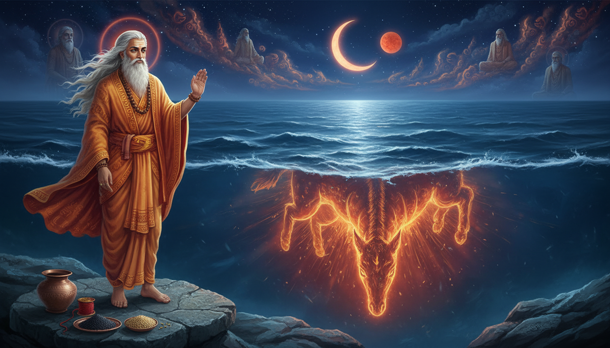

When grief becomes unbearable, it often turns into fire. A person who has been wronged may carry that fire silently for years, and when it finally erupts, it can burn relationships, health, reputation, and peace of mind. Sage Aurva belongs to exactly this human territory. His story is not only an ancient Puranic episode; it is a map for mastering the most dangerous energy inside us—anger that feels justified.

Aurva is remembered as a fierce sage of the Bhrigu lineage. His very name means "born from the thigh," because he emerged from his mother's thigh when the family faced slaughter. His anger became so powerful that it could consume the world. Yet he did not become a destroyer. He learned how to redirect that heat into the ocean. In Vedic symbolism, the ocean is the unconscious, the vast field of memory, and the deep cooling power that can hold enormous force without letting it become chaos. That is why Aurva's story is one of the most useful remedial myths for anger, inherited grief, and uncontrolled Mars energy.
The Story: The Massacre and the Child Born From the Thigh
The Mahabharata and the Puranic tradition describe a long feud between the Kshatriyas and the descendants of Bhrigu. After a king's line had received wealth from the Bhrigu family and later faced poverty, they demanded that wealth back. The Bhrigus refused to return what had been given as sacred gift. When the Kshatriyas discovered that the Bhrigus had hidden their treasure, they attacked their hermitages and killed them, including unborn children.
One woman, Arushi, hid her unborn child in her thigh. The attackers rushed toward her, but the child emerged with such radiance that they were blinded and could not continue. Because the child came from the thigh, he was called Aurva. He survived when the rest of his lineage had almost been wiped out.
As Aurva grew up and learned what had happened, his grief transformed into a terrible vow of revenge. Through intense penance, he generated a fire of wrath so great that it threatened to consume the entire world. The Pitris, his own ancestors, appeared before him and advised him to stop. They reminded him that if the world were destroyed, there would be no dharma, no lineage, and no purpose left for his victory. They asked him to release the fire into the ocean, where it could remain as the submarine Vadavagni and not destroy creation.
Aurva listened. He redirected the flame into the ocean, where it became the submarine mare-fire. The same fire that could have burned the world became a hidden force beneath the waters. This is Aurva's real achievement: he did not suppress anger. He transformed its direction.
Why Mars Is the Astrological Key
Mars is courage, will, blood, surgery, protection, and swift action. But when Mars is afflicted, it becomes impatience, rage, inflammation, accidents, harsh speech, and emotional warfare. Aurva's story speaks directly to the Mars principle because his entire life is a confrontation with violence.
In Vedic astrology, Mars is debilitated in Cancer. Cancer is ruled by the Moon and represents the mother, home, feelings, ancestral memory, and the unconscious. Put Mars in Cancer and the warrior's direct force does not disappear. It becomes emotionally indirect. It leaks out through hurt, silent resentment, family conflict, and overprotection.
This is exactly Aurva's psychology: a child born from the mother's body, carrying ancestral violence, trying to control a fire inside a water field. The ocean receives fire, but it does not extinguish it. That is why the story is so precise. Unprocessed anger does not die when we hide it; it becomes submarine heat—still burning beneath the surface.
| Astrological principle | Aurva's story | Modern lesson |
|---|---|---|
| Mars | Fire of wrath | Anger is energy, not identity |
| Cancer | Mother, family, feelings | Old family pain can turn into present heat |
| Moon | Mind and memory | The mind remembers what the mouth refuses to speak |
| Varuna/ocean | Cooling containment | Emotion needs a healthy container |
| Pitru karma | Ancestral wound | Family patterns repeat until consciously released |
| Jupiter | Wisdom of ancestors | Guidance softens revenge into dharma |
| Debilitation transformed | Vadavagni in water | Hidden power becomes useful when disciplined |
The Seven Remedial Powers of Aurva
1. Ancestral forgiveness
Aurva's first remedy is Pitru Shanti. His destructive fire is born from ancestral grief. Therefore, the healing must also begin at the ancestral level.
A simple practice: On a Tuesday or Saturday, offer water mixed with black sesame and barley to your ancestors or to a sacred plant. Say: "May the anger that I inherited be released. May I remain the one who heals, not the one who repeats."
This is not about pretending that injustice did not happen. It is about refusing to let injustice write the next chapter of your family.
2. Water containment
The ocean in the story is the container of power. A modern practitioner can keep a copper or clay bowl of water on the altar. Water teaches the nervous system that force can be held without being exploded.
When anger rises, do not immediately speak. Place your hands around the bowl or a glass of water and take nine slow breaths. The goal is not to become numb; it is to keep the fire from destroying the wrong thing.
3. Mars discipline
Aurva's heat is tremendous, but it becomes safe only when guided by wisdom. Mars remedies work best when they channel energy into disciplined action.
On Tuesday, recite a Mars mantra such as "Om Kram Kreem Kraum Sah Bhaumaya Namah" 11, 27, or 108 times. Then donate red lentils, jaggery, or iron to someone in need. The donation completes the energy circuit. Mars does not need to be weakened; it needs to be redirected into service.
4. Cooling breath
When anger becomes physical, the quickest remedy is breath. Sheetali pranayama, chandrabhedana, or simple nine-breath cooling practice can shift the nervous system from reaction to choice.
Practice: Sit comfortably. Inhale slowly through the left nostril or through a curled tongue if comfortable. Exhale as though steam is dissolving into water. Repeat nine rounds. This is a simple Vedic body-remedy for the same heat that Aurva carried into the ocean.
5. Ethical occult transfer
The story's occult secret is transference. Aurva gives his fire to the ocean, not to another person. This distinction matters. Occult practice must never become a ritual of cursing.
A safe modern transfer ritual: Write your grievance in one sentence. Sit before a bowl of water. Mentally pour the heat into the water. Then offer the water to a plant or pour it safely into the earth. Say: "I release what is not mine to carry." Do not write the other person's name or intend harm. The practice is for purification, not attack.
6. Jupiter's mercy
The Pitris appear like wisdom itself. They do not tell Aurva his pain is invalid. They remind him of consequence. In the current transit, exalted Jupiter in Cancer until 31 October 2026 is an extraordinary ally for this kind of mercy.
To invoke Jupiter, study one spiritual verse daily, feed an elder or teacher, or donate books. Jupiter's remedy is always expansion of perspective. When the field of vision becomes larger, revenge becomes smaller.
7. Right protection
Aurva is still a fierce sage. His compassion does not make him weak. The mature Mars principle knows when to say no, when to protect, and when to step back.
A boundary practice: stand straight, bring your palms together, and say: "I am not against anyone. I am for dharma. I choose protection without hatred." Then write one clear boundary you will keep this week. This turns Mars into a guardian rather than an arsonist.
Five Lesser-Known Rituals for Anger and Inherited Heat
1. Vadava Jal Dharana
Take a copper or clay vessel and fill it with clean water. Add a few grains of barley and black sesame. Tie a red thread around the vessel or place it beside the vessel. In the morning, sit facing east and mentally place your anger into the water. In the evening, offer the water to a plant.
This is a household version of Aurva's oceanic transfer. Do not keep the charged water in the house overnight.
2. Pitra-Varuna Shanti
Offer fresh water, black sesame, white flowers, and a little barley. Invoke Varuna, the deity of waters and moral order, along with your ancestors. Ask for peace in the family line. This ritual is especially useful when anger appears to repeat across generations.
3. Mars-Knot Release
Take a red thread and tie three knots. With the first knot say: "Courage." With the second say: "Boundary." With the third say: "Forgiveness." Keep the thread on your altar for twenty-one days. On the twenty-first day, untie the knots while repeating: "I am free from repetition." Then place the thread in a clean place or dispose of it respectfully.
This is not a charm to control another person. It is a psychological and occult anchor for your own Mars discipline.
4. Ashlesha Fire-to-Water Gaze
From 17 October to 12 November 2026, Mars transits Ashlesha, the coiled serpent nakshatra in Cancer. This is a powerful window to observe hidden anger before it strikes.
Practice: Fill a wide bowl with water. Light a small lamp or candle nearby. Look at the flame's reflection in the water for three minutes. Let the mind see that fire and water are present together without one destroying the other. Then repeat: "Like water, I hold fire with awareness."
5. Nine-Breath Ocean Practice
Inhale for four counts, hold for one count, and exhale for six counts. Imagine a red flame descending into a blue ocean with each exhalation. Repeat nine rounds. This practice can be used before a difficult conversation, after an argument, or whenever the body becomes hot with rage.
The Twenty-One Day Aurva Sadhana
This sadhana is designed for the current Mars-in-Cancer window. It is gentle, safe, and suitable for a modern reader.
| Days | Focus | Daily practice |
|---|---|---|
| 1 to 3 | Purification | Morning water offering, nine-breath cooling practice, reduce spicy food |
| 4 to 7 | Boundary | Red thread practice, one clear no, one constructive action |
| 8 to 11 | Ancestral repair | Black sesame offering, remember one ancestor with respect |
| 12 to 14 | Mars discipline | Tuesday mantra, physical exercise, donate red lentils |
| 15 to 17 | Pitta cooling | Eat sweet, bitter, or astringent foods; moonlight for ten minutes |
| 18 to 20 | Speech repair | No sarcasm, no gossip, one conscious apology |
| 21 | Completion | Offer water to a tree, feed someone, write the lesson learned |
This practice is not a magical shortcut. It is a systematic way to convert hidden heat into protective strength.
The Current Mars-in-Cancer Alignment
In sidereal Vedic astrology, Mars remains in Cancer from 18 September to 12 November 2026. From 17 October to 12 November it moves through Ashlesha Nakshatra. This is the exact symbolic field of Aurva: Mars in the Moon's water sign, surrounded by hidden, coiled, ancestral emotion.
Until 31 October, exalted Jupiter also remains in Cancer. This is remarkable. A debilitated Mars with exalted Jupiter can produce Neecha Bhanga, the cancellation of debilitation through wisdom and mercy. In practical language, this period can either become emotionally volatile or deeply healing. The difference is whether the practitioner applies discipline.
Use this window to:
- Speak less when emotionally triggered.
- Delay major confrontations until the body is calm.
- Drink adequate water and reduce extreme heat in food.
- Practice a Mars mantra or Hanuman Chalisa on Tuesday.
- Perform ancestral water offerings.
- Channel anger into a specific protective action, not a public explosion.
- Ask whether you are protecting dharma or only defending ego.
This transit does not mean you must become passive. It means the warrior must learn emotional intelligence.
Ayurveda: Cooling the Inner Fire
Ayurveda gives the body-level explanation for Aurva's fire. Anger is often a symptom of aggravated Pitta. When Pitta becomes excessive, it shows as burning sensations, acidity, rashes, harsh speech, irritability, and sleeplessness.
The Caraka Samhita recommends sweet, light, cooling, and slightly bitter foods and drinks for pacifying Pitta. It also praises cooling water, moonlight, soothing music, gentle company, and residence near water. These are not random recommendations; they are the physiological mirror of Aurva's oceanic remedy.
A simple Pitta-cooling routine:
- Eat warm cooked food rather than excessive fried, fermented, or heavily spiced food.
- Use ghee, coconut water, cucumber, coriander, fennel, and sweet fruits if suitable for your constitution.
- Avoid alcohol, excessive coffee, fermented food, and late-night screens.
- Sit in moonlight for ten minutes.
- Use sheetali or sheetkari pranayama.
- Consult a qualified Ayurvedic practitioner before taking herbs or making major dietary changes.
This is how the story becomes practical: first cool the body, then cool the mind, then repair the ancestral field.
The Deeper Meaning of Vadavagni
Vadavagni is not merely a mythological submarine fire. It is a symbol of energy that has been given a sacred container. Modern psychology calls this integration. Vedic tradition calls it shanti.
Aurva does not destroy his anger. He releases it into a larger field where it can be useful without being destructive. This is the secret of every serious spiritual practice: raw emotion becomes power when it is witnessed, purified, and aligned with dharma.
The same fire that wants to burn the world can instead:
- Protect the innocent.
- Speak a necessary truth.
- End an abusive cycle.
- Give courage to someone afraid.
- Fuel discipline, service, and spiritual intensity.
The goal is not to become emotionless. The goal is to stop letting hidden emotion govern you.
Why Aurva Still Matters
Modern life is full of justified anger. Many people carry old wounds from family, caste, community, workplace, or childhood. Aurva's story tells such a person: your anger may be understandable, but if you let it become your identity, it will consume you and everyone near you.
The ocean of consciousness can hold your fire. Your ancestors can guide you. Mars can become courage. Ayurveda can cool the body. Astrology can show you the timing. Philosophy can remind you why mercy is not weakness.
Rishi Aurva achieved mastery over wrath fire because he discovered the highest transformation: energy that could destroy can become energy that protects. That is the victory this story offers you. You do not have to pretend that you were never hurt. You only have to decide whether your fire will burn the world or illuminate it.
Sources
- Wikipedia: Category:Rishis
- Wikipedia: Aurva
- Wikipedia: Vadavagni
- WisdomLIB: Story of Aurva
- WisdomLIB: The Story of Aurva, Adi Parva CLXXXI
- Brihat Parashara Hora Shastra, Chapter 3, exaltation and debilitation
- Astro River: Mars in Cancer 2026
- Applied Vedic Astrology: Mars in Ashlesha until November 12
- Caraka Samhita 1.6.41-48: pitta-pacifying seasonal regimen
- Caraka Samhita, Vimana Sthana 6.17: management of aggravated pitta
- Caraka Samhita Online: Pitta dosha